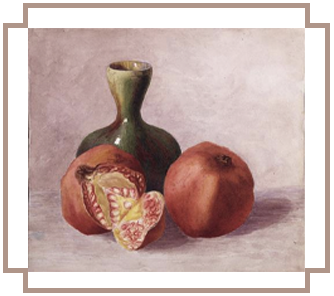
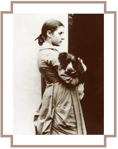

Early Life
Potter's paternal grandfather, Edmund Potter, from Glossop in Derbyshire, owned what was then the largest calico printing works in England, and later served as a Member of Parliament.

Beatrix's father, Rupert William Potter (1832–1914), was educated at Manchester College by the Unitarian philosopher James Martineau. He then trained as a barrister in London. Rupert practised law, specialising in equity law and conveyancing. He married Helen Leech (1839–1932) on 8 August 1863 at Hyde Unitarian Chapel, Gee Cross. Helen was the daughter of Jane Ashton (1806–1884) and John Leech, a wealthy cotton merchant and shipbuilder from Stalybridge. Helen's first cousins were Harriet Lupton (née Ashton), the sister of Thomas Ashton, 1st Baron Ashton of Hyde. It was reported in July 2014 that Beatrix had personally given a number of her own original hand-painted illustrations to the two daughters of Arthur and Harriet Lupton, who were cousins to both Beatrix and Catherine, Duchess of Cambridge.
Beatrix's parents lived comfortably at 2 Bolton Gardens, West Brompton, where Helen Beatrix was born on 28 July 1866 and her brother Walter Bertram on 14 March 1872. Beatrix lived in the house until her marriage in 1913. The house was destroyed in the Blitz. Bousfield Primary School now stands where the house once was. A blue plaque on the school building testifies to the former site of The Potter home.
Both parents were artistically talented, and Rupert was an adept amateur photographer. Rupert had invested in the stock market, and by the early 1890s, he was extremely wealthy.
Potter's family on both sides were from the Manchester area. They were English Unitarians, associated with dissenting Protestant congregations, influential in 19th century England, that affirmed the oneness of God and that rejected the doctrine of the Trinity.
Beatrix was educated by three able governesses, the last of whom was Annie Moore (née Carter), just three years older than Beatrix, who tutored Beatrix in German as well as acting as lady's companion. She and Beatrix remained friends throughout their lives, and Annie's eight children were the recipients of many of Potter's delightful picture letters. It was Annie who later suggested that these letters might make good children's books.
She and her younger brother Walter Bertram (1872–1918) grew up with few friends outside their large extended family. Her parents were artistic, interested in nature, and enjoyed the countryside. As children, Beatrix and Bertram had numerous small animals as pets which they observed closely and drew endlessly. In their schoolroom, Beatrix and Bertram kept a variety of small pets, mice, rabbits, a hedgehog and some bats, along with collections of butterflies and other insects which they drew and studied. Beatrix was devoted to the care of her small animals, often taking them with her on long holidays. In most of the first fifteen years of her life, Beatrix spent summer holidays at Dalguise, an estate on the River Tay in Perthshire, Scotland. There she sketched and explored an area that nourished her imagination and her observation. Beatrix and her brother were allowed great freedom in the country, and both children became adept students of natural history. In 1882, when Dalguise was no longer available, the Potters took their first summer holiday in the Lake District, at Wray Castle near Lake Windermere. Here Beatrix met Hardwicke Rawnsley, vicar of Wray and later the founding secretary of the National Trust, whose interest in the countryside and country life inspired the same in Beatrix and who was to have a lasting impact on her life.
At about the age of 14, Beatrix began to keep a diary. It was written in a code of her own devising which was a simple letter for letter substitution. Her Journal was important to the development of her creativity, serving as both sketchbook and literary experiment: in tiny handwriting, she reported on society, recorded her impressions of art and artists, recounted stories and observed life around her. The Journal, decoded and transcribed by Leslie Linder in 1958, does not provide an intimate record of her personal life, but it is an invaluable source for understanding a vibrant part of British society in the late 19th century. It describes Potter's maturing artistic and intellectual interests, her often amusing insights on the places she visited, and her unusual ability to observe nature and to describe it. Started in 1881, her journal ends in 1897 when her artistic and intellectual energies were absorbed in scientific study and in efforts to publish her drawings. Precocious but reserved and often bored, she was searching for more independent activities and wished to earn some money of her own while dutifully taking care of her parents, dealing with her especially demanding mother, and managing their various households.